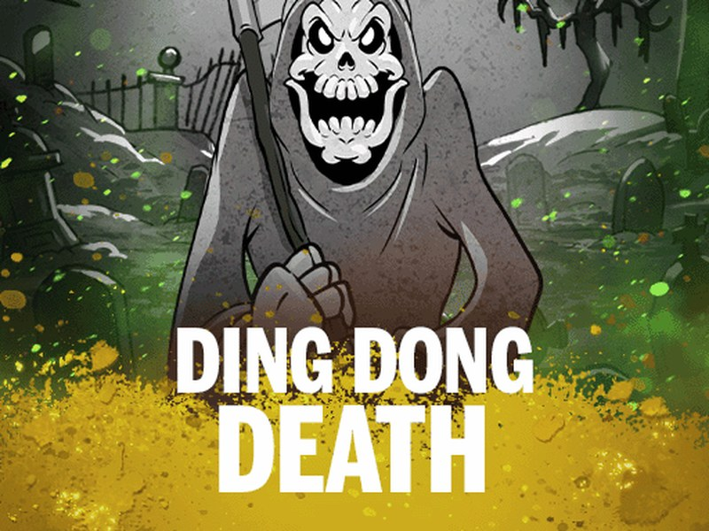

Ding Dong Death - RTP, Review & Where to Play

Play Ding Dong Death for Real Money
| Provider | Nolimit City |
|---|---|
| Game type | Video slot |
| Theme | Horror |
| RTP | Varies by casino (see FAQ) |
| Mobile | Yes |
Overview
Ding Dong Death is Nolimit City's cartoon-horror take on mortality, released on September 22, 2026. A rubber-hose Grim Reaper grins over a black-and-white graveyard while familiar faces from Mental, San Quentin, Fire in the Hole, Book of Shadows and Das xBoot return on the reels. The 1920s vintage cartoon style, splashes of acid green and a rock soundtrack keep the mood playful in a macabre way.
The game runs on a 6x3 grid with 729 ways to win, driven by avalanches: winning symbols collapse and fresh ones drop in, chaining several wins from a single spin. Every third avalanche unlocks a level of the five-stage Death Meter, converting every instance of a designated character symbol into wilds for the rest of the round.
Reaching Level 5 sets a global win multiplier at x2, then adds +1 for each later unlock, and can trigger the Mental Patient feature, an xSplit Wild that doubles its whole row, or a fresh xNudge Wild that grows its multiplier as it drops. The Knock Knock feature can also strike when matching symbols line up without paying. Three to five scatters award 7, 9 or 11 Ding Dong Spins, while six scatters open 13 Ding Dong Death Spins with the meter and multiplier carried over.
With extreme volatility rated 10 out of 10 and a maximum payout of 14,280x the bet, Ding Dong Death is built for players who enjoy high-risk Nolimit City maths. Stakes start at €0.20. The standard RTP is 95.83%, though casinos can run other settings, so always check the paytable where you play.
Screenshots
Where to Play Ding Dong Death
Ding Dong Death is available at online casinos that carry Nolimit City games. Start with our reviewed toplists:
Nigeria | Mexico | Kenya | South Africa | Colombia
Ding Dong Death FAQ
What is the RTP of Ding Dong Death?
Nolimit City releases Ding Dong Death with several RTP settings, and each casino picks one of them. The exact figure can differ between casinos. To check it, open the game info or paytable inside the game at the casino where you play.
Can I play Ding Dong Death for free?
Many online casinos let you try Ding Dong Death in demo mode without depositing. Pick a casino from our toplists and look for a demo or free play option if you want to test the game first.
Where can I play Ding Dong Death for real money?
Ding Dong Death is available at casinos that carry Nolimit City games. Our toplists cover Nigeria, Brazil, Mexico, Kenya, South Africa, Colombia and India, and only include operators we reviewed.
Does Ding Dong Death work on mobile?
Yes. Like all Nolimit City releases, Ding Dong Death runs in the browser on phones and tablets, with no download needed.
What is the max win in Ding Dong Death?
14,280x your bet.
What bonus features does Ding Dong Death have?
The five-level Death Meter turns character symbols into wilds as avalanches chain. xNudge and xSplit Wilds, the Knock Knock feature and two free spins modes (Ding Dong Spins and Ding Dong Death Spins) build on it.